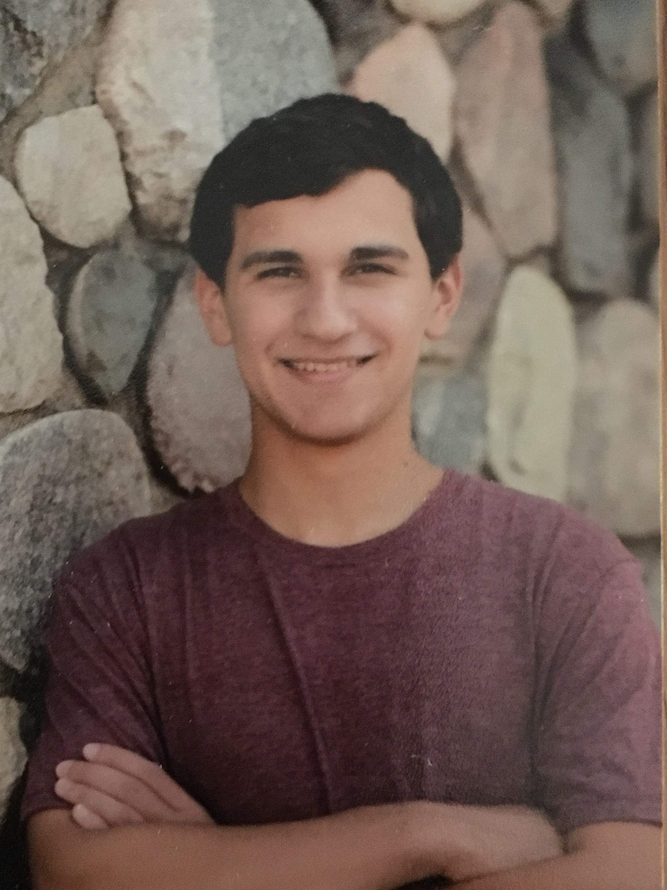

I am a Junior studying both Computer Science and Biomedical Engineering at Wayne State University in Detroit Michigan. I am also on the cross country team at Wayne State. Throughout my years as a student, I have picked up on many technical skills. Click through the following to see what I have to offer!
These skills come from both my work in school and on-the-job experience.
Below, I outline the jobs I have had throughout my academic career!
The ATRC (Autonomy and Technology Research Center) at Wright State University hires interns to work for Air Force Research Lab personell on projects. My project involved developing a deep learning model used to generate raw audio from text input. I worked here over the summer of 2021.
Over the summer going into my freshman year of college, I was a daycamp counselor at a camp hosted at a local park. This meant that I oversaw a group of 8-10 children, grades kindergarten through second, and was in charge of leading some games for a larger group of 40-50 children. I was also involved with the township parks and recreation department, meaning I was expected to work events put on for the community.
During the Covid pandemic, I struggled to find my first internship. Therefore, I decided to work on my programming skills by freelancing. I created an account on Fiverr.com and advertised my skills. I received quite a few clients and completed projects for them, most of which used C and C++. This taught me how to complete projects efficiently and produce high quality work.
Here are a few of my recent projects!
Find my voice is a mobile app designed by myself and colleague. It is an alternative communication app that will allow those with verbal dissabilities to communicate effectively. It includes features such as customizable commands, customizable symbols, and text to speech.
During a software engineering course, I was in charge of leading a team to develop a piece of software that solved a problem. We decided to make an app that stores basic patient information, so that when they went to a clinic, they could avoid filling out paperwork. The app includes a login, email verification, a QR reader for clinics, and much more.
As a personal project, I have begun to develop my own chess engine. This project is still in its beginning phases, and it is proving to be quite the challenge. Having other projects on my plate, this has been put on the back-burner for now, but I plan to pick it up again soon!
Send me a message!